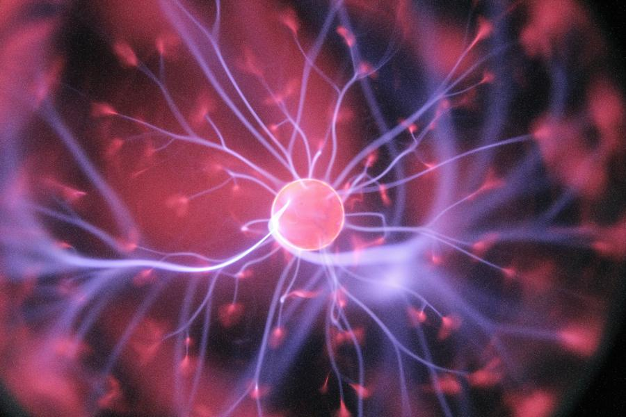

Materias
10en 4 áreas
- Tecnología 2
- Ciencias 2
- Lenguaje 2
- Integral 4
Escuela Politécnica de Guadalajara
Proyecto integrador del grupo 1A, turno matutino, del Tecnólogo en Sistemas Informáticos. Las diez materias del ciclo 2026B con sus unidades y temas, en un solo lugar.
tsin1am@poli:~/1A$ ls materias/
tutoria tecnologias sexualidad
programacion ingles historia numerica
lectoescritura fisica socioemocional
tsin1am@poli:~/1A$ grep -c "tema" temario.txt
230
tsin1am@poli:~/1A$ ./semestre --progreso
semana 15 de 18
tsin1am@poli:~/1A$
Materias
10en 4 áreas
Temas y subtemas
230por repasar
Semana del ciclo
15de 18
Equipo
6integrantes
Ciclo 2026B · 10 materias

Integración grupal, reglamentos, SIIAU y estrategias para permanecer y aprender mejor en el bachillerato.
4 unidades · 47 temas

Sistema operativo, archivos, ofimática y ciudadanía digital para trabajar con orden y seguridad.
3 ejes temáticos · 21 temas

Sexualidad humana, igualdad de género, salud sexual y reproductiva, y decisiones informadas.
4 ejes temáticos · 16 temas

Datos, variables y operadores; pseudocódigo, diagramas de flujo, estructuras de control y C.
4 ejes temáticos · 29 temas

Presentaciones personales, verb to be, pronombres, demostrativos y rutinas en presente simple.
3 ejes temáticos · 18 temas
De la Real Universidad de 1792 a la Red Universitaria: historia, misión y ser universitario.
4 unidades · 17 temas

Números reales, proporciones y porcentajes, álgebra básica y razonamiento lógico-matemático.
4 ejes temáticos · 17 temas

Comprensión lectora, ortografía, redacción de textos y expresión oral frente a grupo.
4 ejes temáticos · 25 temas

Medición, movimiento y fuerzas, electricidad y magnetismo, sonido y luz en 18 semanas.
4 unidades · 23 temas
Autoconocimiento, autorregulación, empatía, colaboración y un proyecto de vida con metas claras.
5 ejes temáticos · 17 temas
Calendario del ciclo 2026B
Semana 15 · 23 – 27 nov. Faltan 3 semanas para el cierre del ciclo.
Física · semana a semana
Sobre el proyecto
Este sitio es nuestro proyecto integrador. Organiza el temario de cada materia del primer semestre para consultarlo rápido, repasar antes de un examen y saber qué tema viene después.
Equipo · 1A Matutino
Pasa el cursor o toca una tarjeta para ver los datos de cada integrante.
Rol en el equipo
Rol en el equipo
Rol en el equipo
Rol en el equipo
Rol en el equipo
Rol en el equipo